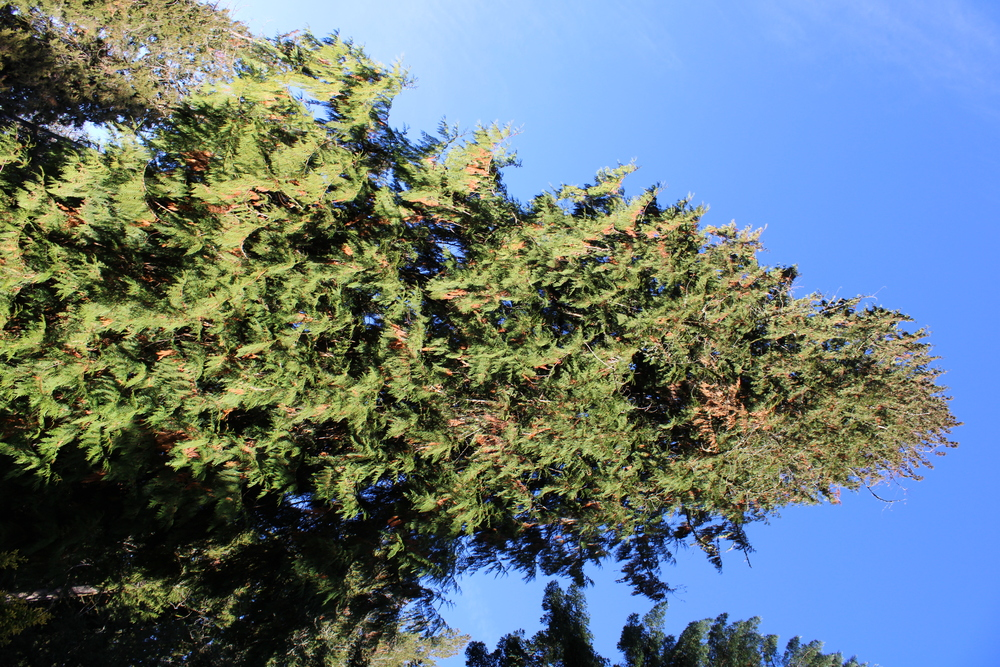

DISCLAIMER: MY OPINIONS AND REVIEWS OF THE BELOW BOOKS ARE MY OWN ONLY
October 2022: Meditations, Confessions, The Emperor of all Maladies
Meditations - Marcus Aurelius

Although this book is short, the beginning few pages were hard for me to get through. Once the book gets going Marcus Aurelius explains
to the reader his viewpoints on life and life after death. Marcus explains that if there is any afterlife, life on earth would be very short
comparatively. He also seemed to think that you would be judged morally on your mortal actions on earth. Because of this the major point he talks about in this book is showing
kindness and making your time on earth as productive and useful as possible. He claims that almost everyone has a consciousness and a sense of morality and since everyone will die eventually \
you need to maximize your positive impact on society. He also liked to stress that death is coming so you should live every day
with this assertive drive to do good for others, and society. You get a real feeling like Marcus in writing this book is coming to grips with the fact that death is part of the natural processes of
life. This book was short but In my opinion, it was worth reading, maybe even more than once. It was not very religious, it mostly just preached western greek and roman value systems.
I was getting strong "Tall-Tree". Marcus was a very tall tree in Ancient Roman Society, but even trees have a finite lifespan and will die of natural causes eventually if not taken out
by non-natural causes.
Rating 7/10 Readability 7/10 Book Picture Score Tall-Tree/10
Confessions - Saint Augustine
 This one was much harder to get through. I wanted to read a religious book for the experience of reading a religious book. The first half wasn't bad. Augustine talks
about his sinful affinities for wine, women, and petty theft. He also talks about how through this he still managed to move from Carthage to Rome and
then to Milan as a teacher of English/Writing. He talks about how his mother was deeply religious and how her death affected his
decision to finally join the catholic church and become a devout worshipper of the Lord. The second half reads like a bible in disguise. But, it does a good job of explaining western religious
lines of reasoning. I feel like I learned a decent amount about why people choose to be religious and devote large amounts of their life to faith.
This one was much harder to get through. I wanted to read a religious book for the experience of reading a religious book. The first half wasn't bad. Augustine talks
about his sinful affinities for wine, women, and petty theft. He also talks about how through this he still managed to move from Carthage to Rome and
then to Milan as a teacher of English/Writing. He talks about how his mother was deeply religious and how her death affected his
decision to finally join the catholic church and become a devout worshipper of the Lord. The second half reads like a bible in disguise. But, it does a good job of explaining western religious
lines of reasoning. I feel like I learned a decent amount about why people choose to be religious and devote large amounts of their life to faith.
Gotta go with "Dying Flower" for the photo rating. Augustine wrote this late in his life and it is clear by the end of it that he's writing it with preaching intentions.
Can't really hate too much on this book, religious devotion is respectable.
Rating 6/10 Readibility 3/10 photo Rating- DyingFlower/ 10
The Emperor of All Maladies: A Biography of Cancer - Siddhartha Mukherjee
 Read this book for work. The beginning was easy reading, but around halfway through the book just gets plain monotonous.
Ambitious Cancer Scientist X discovers Y advancement onto cancer That Yields Z result that holistically yields small progressions in cancer treatment advancements.
The book is downright depressing. But I guess such is the nature of Cancer treatment. More people die from it or die with it in their system than beat it. Cells
mutate with time and there is little that one can do to prevent it even if they stay away from known carcinogens.
That said, the book is quite educational on the history of cancer. It explains how historically, some researchers were stopped from making advancements
because of peanut butter-thick paradigms that could not be breached until new generations of trail-blazing young minds were able to prove superior methods and practices.
The greatest takeaway I got from this book is the fragility of life. One day you could be going about your status quo and the next you are finding out that you have 6 months to live
because you had cancer that has metastisized to half of your body.
Read this book for work. The beginning was easy reading, but around halfway through the book just gets plain monotonous.
Ambitious Cancer Scientist X discovers Y advancement onto cancer That Yields Z result that holistically yields small progressions in cancer treatment advancements.
The book is downright depressing. But I guess such is the nature of Cancer treatment. More people die from it or die with it in their system than beat it. Cells
mutate with time and there is little that one can do to prevent it even if they stay away from known carcinogens.
That said, the book is quite educational on the history of cancer. It explains how historically, some researchers were stopped from making advancements
because of peanut butter-thick paradigms that could not be breached until new generations of trail-blazing young minds were able to prove superior methods and practices.
The greatest takeaway I got from this book is the fragility of life. One day you could be going about your status quo and the next you are finding out that you have 6 months to live
because you had cancer that has metastisized to half of your body.
This book gets a photo rating of "Pretty Plant". Throughout history cancer was not even talked about because most people didn't live long enough to die from it. Even still
until modern times, there was no effective treatments or therapies for cancer. At least nowadays there are a few cancers that have positive prognoses. So in essence from reading this book
it appears as though we are in the pretty plant stage of cancer research development. Soon it might even be flowering who knows.
Rating 6/10 Readability 6/10 Photo Score
November 2022: 1177 BC, The Prince, Beyond Good And Evil, The Everything Bubble, The Intelligent Investor
1177 B.C The Year Civilization Collapsed - Eric H. Cline
 Found this book around the house. It seemed interesting on the surface. Was a bit of a chore to read. The problem with ancient history is there is not much known about it. All that
can be done is read the old surviving written records and excavate some archeological sites. There is a significant amount of guesswork that goes into constructing theories and because of
that most conclusions that can be drawn are generalities that most likely happened within a somewhat precise time span, but nobody really knows for sure.
Not really my cup of tea type of book, but it was somewhat well written, and there are some interesting tidbits talking about ancient egypt in it. The book focusese around "The Sea Peoples"
who were this group of migrating/attacking/refugee/nobodyknows invaders who came conquered some land, and then left. The book talks about events that eventually leads to the bronze
age collapse, but looking back on this read 1 month later I can't really say I get too much out of this book.
Found this book around the house. It seemed interesting on the surface. Was a bit of a chore to read. The problem with ancient history is there is not much known about it. All that
can be done is read the old surviving written records and excavate some archeological sites. There is a significant amount of guesswork that goes into constructing theories and because of
that most conclusions that can be drawn are generalities that most likely happened within a somewhat precise time span, but nobody really knows for sure.
Not really my cup of tea type of book, but it was somewhat well written, and there are some interesting tidbits talking about ancient egypt in it. The book focusese around "The Sea Peoples"
who were this group of migrating/attacking/refugee/nobodyknows invaders who came conquered some land, and then left. The book talks about events that eventually leads to the bronze
age collapse, but looking back on this read 1 month later I can't really say I get too much out of this book.
This book gets a photo rating of "BarkChips". You're looking at some scraps of what was once a tree but there is no way of knowing how tall the tree it belonged to was or
any specifities about the actual tree because it has been grinded up into a bunch of little pieces. This is much the nature of ancient history, except if you're lucky there will be remnents
of the past, there is mostly not even that.
Rating 3/10 Readability 4/10 Photo Score BarkChips/10
The Prince - Machiavelli
 Machiavelli was a man that was living during the dark ages of Italy. He had a somewhat failed political career and was a bit of a bitter man. Alot of the political failings of Italy and the church at that
time to stave off foreign invaders, and the reasons why the Princes of Italy had failed at the time made good sense to me. He made alot of good points in this book.
Of course he also said alot of very unacceptable heinous practices about how to treat people that I will not go into detail about. You will have to read the book yourself if you are curious.
Overall the book teaches you a bit about the history in Europe around the 1400-1500s and that was rather interesting to me.
Machiavelli was a man that was living during the dark ages of Italy. He had a somewhat failed political career and was a bit of a bitter man. Alot of the political failings of Italy and the church at that
time to stave off foreign invaders, and the reasons why the Princes of Italy had failed at the time made good sense to me. He made alot of good points in this book.
Of course he also said alot of very unacceptable heinous practices about how to treat people that I will not go into detail about. You will have to read the book yourself if you are curious.
Overall the book teaches you a bit about the history in Europe around the 1400-1500s and that was rather interesting to me.
This book gets a photo rating of "Old Dismembered sink plumbing". The dude was dripping some facts, and no doubt at one time was functioning in society
but at the end of the day I think of old dismembered sink plumbing when i think of this book.
Rating 5/10 Readability 5/10 Photo Score Old Dismembered Faucet/10
Beyond Good and Evil Friedrich Nietzsche
 The problem with this book is that it put me to sleep in many sections. The way that this guy writes is just plain predictable. Because of this I stumbled through this book with not much effort
skipping parts of paragraphs at will. I can't even remember the core argument that he was trying to make except saying that modern society is getting too soft. After
reading 3 random pages of the book to jog my memory I guess his main argument was that modern society needs to lean on traditionalist values in order to preserve order and functionality.
Again not a super attractive book for modern minds. And oncemore there are some things in this book that are not really acceptable in modern society.
Read it and find out but probably don't because it's a hard one to get through.
The problem with this book is that it put me to sleep in many sections. The way that this guy writes is just plain predictable. Because of this I stumbled through this book with not much effort
skipping parts of paragraphs at will. I can't even remember the core argument that he was trying to make except saying that modern society is getting too soft. After
reading 3 random pages of the book to jog my memory I guess his main argument was that modern society needs to lean on traditionalist values in order to preserve order and functionality.
Again not a super attractive book for modern minds. And oncemore there are some things in this book that are not really acceptable in modern society.
Read it and find out but probably don't because it's a hard one to get through.
This book gets a photo rating of "Undesirable Apple". It's not bad, you can eat it, but just like the look of that apple in the photo you will also not be so sad if it stays on the tree, falls
down and decomposes. there are better apples out there.
Rating 5/10 Readability 7/10 Photo Score Old Dismembered Faucet/10
The Everything Bubble - Graham Summers
 This book was actually very interesting. Half of it details the history of the American financial system from the founding of the Federal Reserve in 1913 to the 2008 housing crisis. It talks about Nixon, Greenspan, Bernanke, and
how we are at the precipice of a huge recession and maybe even a depression. Was a good intro book into modern monitary theory. Not going to pretend like I understood everything in this book perfectly, but It gives some perspective
to what exactly is money and why debt and interest rates are so important in the modern financial system. I would definately recommend this book.
This book was actually very interesting. Half of it details the history of the American financial system from the founding of the Federal Reserve in 1913 to the 2008 housing crisis. It talks about Nixon, Greenspan, Bernanke, and
how we are at the precipice of a huge recession and maybe even a depression. Was a good intro book into modern monitary theory. Not going to pretend like I understood everything in this book perfectly, but It gives some perspective
to what exactly is money and why debt and interest rates are so important in the modern financial system. I would definately recommend this book.
This book gets a photo rating of "Long Grass". It's almost ready to be cut and when the grass gets cut a whole bunch of government debt disappears and the Bull market restarts again.
The central bank is a complicated topic. I'm not the one to explain it. Read the book if you're interested. It's well written and explains everything in laymen's terms.
Rating 8/10 Readability 10/10 Photo Score Long Grass/10
The Intelligent-Investor Benjamin Graham
 This book is legend status. Never have I read something that so eloquently teaches you to not be an Ape, think for yourself, don't be sheepish with your money, do your own reserach, and other timeless investing principles.
I still have around 100 pages left in this book but it is beginning to wind down and I really must say it was an interesting one. It talks about how companies like to riddle their financial reports with fine print and it talks about
how to recognize price bubbles when they come. It talks alot about the tech bubble and all of the irationalities that got alot of people into alot of trouble.
Just a good overall book on investing. Not going to teach you about indicators, or super specific stock analysis, but like it promises if you follow the teachings of the book the worst that will happen is that you will not make any money.
You will not lose huge amounts of money doing Graham's strategies. That's his whole deal is he teaches how to mitigate risk in a very risky place like the stock market. It's a good read.
It can feel grindy/ boring at times, but it's worth reading in my opinion.
This book is legend status. Never have I read something that so eloquently teaches you to not be an Ape, think for yourself, don't be sheepish with your money, do your own reserach, and other timeless investing principles.
I still have around 100 pages left in this book but it is beginning to wind down and I really must say it was an interesting one. It talks about how companies like to riddle their financial reports with fine print and it talks about
how to recognize price bubbles when they come. It talks alot about the tech bubble and all of the irationalities that got alot of people into alot of trouble.
Just a good overall book on investing. Not going to teach you about indicators, or super specific stock analysis, but like it promises if you follow the teachings of the book the worst that will happen is that you will not make any money.
You will not lose huge amounts of money doing Graham's strategies. That's his whole deal is he teaches how to mitigate risk in a very risky place like the stock market. It's a good read.
It can feel grindy/ boring at times, but it's worth reading in my opinion.
This book gets a photo rating of "Blue Sky". It's a book that will make your investing future a blue sky of limitless posibilities if you take most of what is being said to heart.
It's not going to make you rich tomorrow but it will help you not make any catastrophic mistakes.
Rating 8/10 Readability 10/10 Photo Score Blue Sky/10